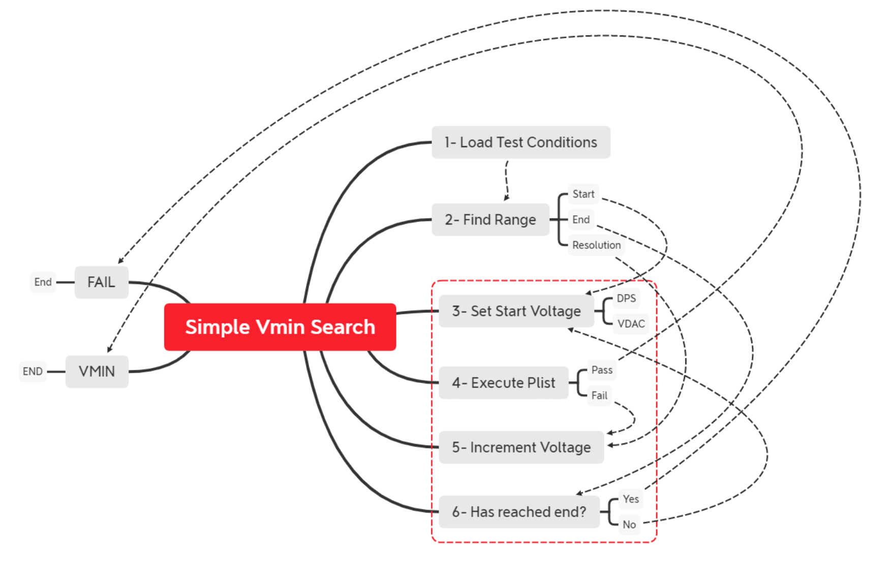
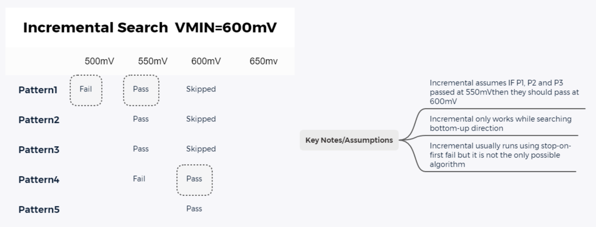
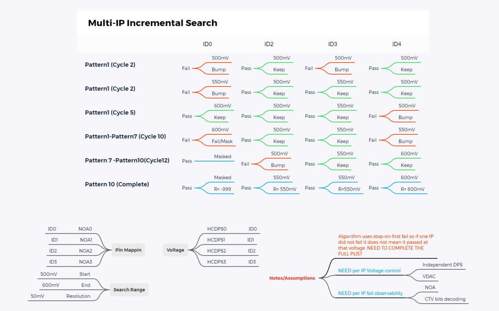

Revision 3/10/2022
VminTC is an extension over PRIME VminSearch that enables additional configurations and integration with DDG DieRecovery and VminForwarding services. The TestClass supports three main modes: Functional, SingleVmin and MultiVmin. SingleVmin supports Vmin searching a single DPS/FIVR/DLVR rail, MultiVmin supports multiple DPS/FIVR/DLVR pins search (requires DieRecovery configuration) and Functional executes single point (static voltage) condition.



VminSearch Test Method from PRIME provides the basic infrastructure for test execution. Please refer to Prime Test Method Specification.
Comma-separated string that sets corner identifiers that were predefined in forwarding table.
If user wants to track RecoveryTrackers but no Vmin, the Corneridentifiers parameter must be empty.
Supports multiple ids if user wants to start and/or update more than one corner. In the case of multiple start values the test class will use the max as the starting point.
Expects the number of CornerIdentifiers to match the number and order of VoltageTargets.
Uses this parameter to modify static voltage condition. When user enters a list of CornerIdentifiers, FlowNumber, VoltageTargets and EndVoltageLimits the static voltage condition will be modified to use values from VminForwardingTable. If voltage in VminForwardingTable is negative (incoming bad or masked) then it will default the VoltageTarget pin/fivr/dlvr to the EndVoltageLimit.
Shared storage key for corner-based PatConfigSetpoints.
While running with VminForwarding enabled, this mode will automatically detect corner identifiers, active flow numbers and apply a list of predefined PatConfigSetPoints.
Refer to PatternModificationsBase test class for configuration pre-settings.
Comma-separated string with pin names for CTV capture data processing. Data expected to be processed by PinMap decoders.
Enables DTS monitor based on configuration from DTSBase input file.
End voltage limits for search. If test reaches this value it will fail/defeature the part. In Functional mode Vmins from VminForwardingTable must not exceed these values.
Number of capture fails set in capture settings. Default 1 will set stop-on-first-fail. Any value greater than 1 will run full plist unless used in combination with ReturnOn plist options."
PrimeVminSearch comma-separated double values to set multiple vmin options.
Runs patconfig to disable core/slice/ip associated to the voltage_target.
Similarly than disable_masked_targets, this setting will disable core/slice/ip but using pairs for even-odd index. Example: ‘100001’ will become ‘110011’
Similarly than disable_pairs, this setting will disable core/slice/ip quaduplets. Example: ‘10000000’ will become ‘11110000’
Sets FIVR mode ‘ON’ or ‘OFF’. Default value is ‘OFF’
Sets incremental search ‘ON’ or ‘OFF’. Default is ON.
Sets capture settings to stop on first fail or continue until either the end of the burst or use of ReturnOn plist option. Default is ‘ON’
Ignored decoded results from masked elements. Default is OFF.
Enables datalogging of per target increments. Default is OFF.
Prints all multi-pass and recovery loops as different ituff lines. Default is OFF.
Prints score board counters in additional to increment tfail. Default is OFF.
Prints per pattern vmin result using plist content table built during verify.
If same burst, pattern name and occurrence is in the table, the entry will be ignored (taking the lowest value).
Tname uses _pp as post-fix, each pattern gets separated by | and each voltage by _. If line exceeds 4K chars, it will wrap using ^ as delimiter.
Values are also store in SharedStorage using InstanceName+'_pp' as key under Context.DUT.
Amble failures are not printed to ITUFF or saved in SharedStorage.
Update DieRecovery tracker regardless of passing or fail condition.
Update VminForwarding only for passing voltages (greater than 0). IMPORTANT:this meanns a failing part/core/ip will not update vmin.
Enables tracing the execution of Concurrent Plists (equivalant to Evergreen InsertCTVs and TraceCTVs UserFunctions)
Requires the Parameters CtvPins, SetPointsPreInstance (to insert CTVs) and SetPointsPostInstance (to remove the CTVs)
See the ConcurrentPlistTracer documentation for more details on usage and output formats.
Modifies capture settings to set CaptureFailureAndCtvPerCycleTest mode.
It will modify capture settings to replace FailCaptureCount = 1 with 9999 and will set Plist option ReturnOn = GlobalStickyError.
Important: plist will not be restored to the original condition
Forces recovery loop execution when last search loop fails. Regardless of RecoveryOptions evaluation.
Initial FIVR condition as defined in ALEPH *.fivrCondition.json. This is applied prior to search point voltage.
Test instance flow number required for VminForwardingTable (depending on mode). Parameter can take single digit FlowNumber or a comma-separated string with one number for each CornerIdentifier.
Supported modes:
Gets initial tracking from die recovery and vmin forwarding table and will update after test is completed.
Gets initial tracking from die recovery and vmin forwarding from table but will NOT update tables after search is completed.
Sets start voltage from instance parameter regardless of VminForwarding value and will update DieRecovery and VminForwarding.
It does not use DieRecovery or VminForwarding to start search and will not update when search is completed.
Sets initial DieRecovery mask for the instance. When ForwardingMode is Merge or Monitor the BitArray will be set using a bitwise OR.
Levels SETUP test condition.
Optional parameter
Used in combination with VminForwarding SearchGuardbandEnabled.
If parameter is set while the instance is running in a search mode with forwarding on (no point test modes), the final vmin result will be compared against stored value in forwarding table.
When mode is active ANY VoltageTarget where result - forwardedvalue > limitguardband will cause the instance to exit port 0.
If parameter is set and instance with no forwarding mode, the final vmin result will be compared against start voltage.
ANY VoltageTarget where result - start > limitguardband will cause the instance to exit port 0.
Similarly to StartVoltages and EngVoltageLimits, the parameter can take single value, list of values and supports DFF, Uservars and/or SharedStorage tokens and expressions.
LimitGuardband = "0.05"; # Single value.
LimitGuardband = "0.05,0.06,0.05,0.06"; # Multiple values.
LimitGuardband = "[D.TOKEN_NAME]"; # DFF token name.
LimitGuardband = "[TOKEN_NAME]-0.003"; # SharedStorage token name using expression.
LimitGuardband = "[TOKEN_NAME0],[TOKEN_NAME1],[TOKEN_NAME2],[TOKEN_NAME3]"; # Multiple SharedStorage tokens.
Sets initial mask pins.
Note: PinMap settings could override your initial MaskPins.
Maximum number of times a search can be repeated for recovering purposes. This parameter is zero by default. Meaning, no repetition will be executed for any search.
Enables a multi-pass search. User needs to list the different mask bits configuration for each pass. Supported for Functional and MultiVmin modes only.
Example: 4 core product doing 2C at the time: MultiPassMasks = “0011,1100”
Note: currently prints vmin data as separate tname sections. Masked incoming cores for each pass will print -8888 as result.
Comma-separated string with indexes pointing to digits being used for scoreboard counters.
Main pattern list.
List of PinMap as defined in DieRecovery. These contain the logic to perform Mask, DisableMaskedElements and Test results decoding.
Optional parameter. Use to set Incoming mask for a related domain (not search rail) and use RecoveryMode.
Parameter is required for all test modes/configurations.
Executes a PLIST with no capture data without reloading/applying test conditions or PatConfigs. Typically use for unit shutdown operations.
Comma-separated string with predicted start voltages expression to be used for Overshoot voltage.
Tokens in [] can contain keys from Uservar, SharedStorage and DFF with prevfix "D.".
If the first iteration of the search passes at StartVoltage, the search will restart from LowerStartVoltageKeys.
StartVoltagesForRetry = "0.5"; # Single value.
StartVoltagesForRetry = "0.5,0.6,0.5,0.6"; # Multiple values.
StartVoltagesForRetry = "[D.TOKEN_NAME_]"; # DFF token name.
StartVoltagesForRetry = "[TOKEN_NAME_]-0.003"; # SharedStorage token name using expression.
StartVoltagesForRetry = "[TOKEN_NAME0],[TOKEN_NAME1],[TOKEN_NAME2],[TOKEN_NAME3]"; # Multiple SharedStorage tokens.
SingleVmin:
If multiple values are passed, it will pick the highest non failig voltage.
MultiVmin:
If single value is passed, it will expand the value to match number of VoltageTargets.
Use of DFF token requires to use 'v' character as separator.
Final value will calculate max of PredictedStartVoltage and StartVoltage.
Comma-separated string with end limit voltage expression(s).
It can take double, SharedStorage keys or DFF stoken staring with prevfix "D.".
EndVoltageLimit = "1.0"; # Single value.
EndVoltageLimit = "1.0,1.1,1.0,1.1"; # Multiple values.
EndVoltageLimit = "[D.TOKEN_NAME_]"; # DFF token name.
EndVoltageLimit = "[TOKEN_NAME_]-0.003"; # SharedStorage token name using expression.
EndVoltageLimit = "[TOKEN_NAME0],[TOKEN_NAME1],[TOKEN_NAME2],[TOKEN_NAME3]"; # Multiple SharedStorage tokens.
SingleVmin:
If multiple values are passed, it will pick the lowest voltage.
MultiVmin:
If single value is passed, it will expand the value to match number of VoltageTargets.
Use of DFF token requires to use 'v' character as separator.
Final value will calculate min of PredictedEndVoltage and EndVoltageLimit.
/// <summary>
/// If search and rules pass: Update VminForwarding and DieRecovery. Exit Port 1.
/// If search and rules fail: Update VminForwarding, skip DieRecovery. Exit Port 0.
/// If search passes but fail rules: Update VminForwarding, skip DieRecovery. Exit Port 2.
/// If search fails but rules pass: Update VminForwarding, skip DieRecovery. Exit Port 0.
/// </summary>
Default,
/// <summary>
/// If search and rules pass: Update VminForwarding and DieRecovery. Exit Port 1.
/// If search and rules fail: Update VminForwarding, skip DieRecovery. Exit Port 0.
/// If search passes but fail rules: Update VminForwarding, skip DieRecovery. Exit Port 2.
/// If search fails but rules pass: Skip VminForwarding, update DieRecovery. Exit Port 3.
/// </summary>
RecoveryPort,
/// <summary>
/// If search and rules pass: Update VminForwarding and DieRecovery. Exit Port 1.
/// If search fails, rules fail and loop has reached MaxRepetitionCount: Update VminForwarding, skip DieRecovery. Exit Port 0.
/// If search passes, rules fail: Update VminForwarding, skip DieRecovery. Exit Port 2.
/// If search fails, rules pass and loop has not reached MaxRepetitionCount: Update VminForwarding, update DieRecovery and repeat search.
/// If search fails, rules pass and loop has reached MaxRepetitionCount: Update VminForwarding, skip DieRecovery. Exit Port 3.
/// </summary>
RecoveryLoop,
/// <summary>
/// If search and rules pass: Update VminForwarding and DieRecovery. Exit Port 1.
/// If search fails, rules fail and loop has reached MaxRepetitionCount: Update VminForwarding, skip DieRecovery. Exit Port 0.
/// If search passes, rules fail and loop has not reached MaxRepetitionCount: Update mask to skip passing targets and repeat search (running fail only).
/// If search passes, rules fail and loop has reached MaxRepetitionCount: Update VminForwarding, skip DieRecovery. Exit Port 2.
/// If search fails, rules pass and loop has not reached MaxRepetitionCount: Update VminForwarding, update DieRecovery and repeat search.
/// If search fails, rules pass and loop has reached MaxRepetitionCount: Update VminForwarding, skip DieRecovery. Exit Port 3.
/// </summary>
RecoveryFailRetest,
/// <summary>
/// If search and rules pass: Update VminForwarding. Exit Port 1.
/// If search or rules fail: Update VminForwarding. Exit Port 0.
/// </summary>
NoRecovery,
Note: There are different FeatureSwitchSettings to modify DieRecovery and VminForwarding update options.
List all the valid/passing bit vector combinations for defined PinMaps. User can either explicitly set the valid combinations are a comma-separated list of bit vectors or can use pre-defined rule from DieRecovery.
If parameter is left empty. Any failing result will be considered a rules failures.
It is important to take in consideration the number of bits and order has to match the defined PinMaps.
List of DieRecovery tracking structures used to read incoming mask bits. These configurations are previously loaded by DieRecovery during init. This parameter is used in conjunction with ForwardingMode, RecoveryMode, PinMap, and InitialMaskBits
List of DieRecovery tracking structures to update the final result bits. These configurations are previously loaded by DieRecovery during init. This parameter is used in conjunction with ForwardingMode, RecoveryMode, PinMap, and RecoveryOptions
This mode is moving a single VoltageTarget but allows to set an initial configuration for related domains.
When ForwardingMode is Input/InputOutput, InitialMaskBits gets combined with BitArray from DieRecovery trackers and use that as mask.
When ForwardingMode is InputOutput/Output and RecoveryMode is RecoveryPort, the failing fail data decode results will be used to update tracking structure and instance will exit different port. Refer to RecoveryMode.
Unlike Functional and SingleVmin where tracker could be different than the VoltageTargets, MultiVmin requires matching RecoveryTracking, VminCornerIdentifiers, VoltageTargets, InitialMaskBits(optional) and RecoveryOptions(optional). When ForwardingMode is Input/InputOutput, InitialMaskBits gets combined with BitArray from DieRecovery trackers and use that as mask. When ForwardingMode is InputOutput/Output, the accumulated bit vector will be used to update the DieRecovery trackers.
Datalog base number for Scoreboard mode. It must be used in combination with ScoreboardEdgeTicks and PatternNameMap.#
Number of ticks for Scoreboard mode while running search. Not used in Functional mode.
Max number of fails to be processed for scoreboard mode. 0 means no scoreboard data. Negative number defaults to max number (big number).
Sets per-pattern capture limit while running on scoreboard mode. Default is 1; meaning one vector cycle per pattern.
Search resolution. Same for all rails. It MUST be a positive (non zero) value.
Start voltages expression. Using Forwarding modes this value will be modified.
StartVoltages = "0.5"; # Single value.
StartVoltages = "0.5,0.6,0.5,0.6"; # Multiple values.
StartVoltages = "[D.TOKEN_NAME_]"; # DFF token name.
StartVoltages = "[TOKEN_NAME_]-0.003"; # SharedStorage token name using expression.
StartVoltages = "[TOKEN_NAME0],[TOKEN_NAME1],[TOKEN_NAME2],[TOKEN_NAME3]"; # Multiple SharedStorage tokens.
Prints time profile to console when mode and LogLevel are enabled.
Timings test condition.
Switch to set test instance behavior.
Executes a single DPS or FIVR/DLVR vmin search using bottoms up incremental search algorithm. It supports DieRecovery, PinMap and VminForwarding operations. Please refer to RecoveryMode for recovery options.*
Executes a multi rail DPS or FIVR/DLVR vmin search using incremental search while running recovery options. It supports DieRecovery, PinMap and VminForwarding operations.
SinglePoint or Static Voltage execution. It also supports DieRecover, PinMap and VminForwarding operations.
SinglePoint or Static Voltage execution. It also supports DieRecover, PinMap and VminForwarding operations. It supports scoreboard logging for 1 fail per pattern.
Test condition name for DPS Vbump search. Specify levels block in your PTM being trigger from your content.
Trigger map name as in PTM file. It is required for DPS Vbump searching while using TriggerLevelsCondition.
List of SharedStorage keys to store vmin results. Expected one variable by VoltageTarget. If single variable is used the value will be set to the highest or failing vmin from all targets.
Configuration name for VoltageConverter. Refer to VoltageConverter documentation.
DPS or FIVR target being searched. SingleVmin as the name suggests supports a single value.
Applies a voltage offset to the applied voltage. Reported final vmin result does not include this offset.
| Date | Author | Comments |
|---|---|---|
| April 9, 2021 | fmurillo | Initial doc. |
| May 25, 2021 | fmurillo | Fixing start voltage for FUNCTIONAL mode. |
| June 24, 2021 | fmurillo | Adding DTSConfiguration support. |
| July 19, 2021 | fmurillo | Adding per pattern printing. |
| August 9, 2021 | fmurillo | Supporting DFF for PredictedStartVoltage, PredictedEndVoltage, StartVoltage and EndVoltageLimits. |
| August 11, 2021 | fmurillo | Adding support for LowerStartVoltageKeys(Overshoot). Replacing PredictedStartVoltage andPredicted EndVoltage. |
| August 11, 2021 | fmurillo | Fixing per_pattern_printing failing while trying to add same pattern with two different voltages. |
| August 30, 2021 | fmurillo | Upgrading to Prime6.01.00. Adding Voltage restore and RecoveryLoop mode. |
| August 30, 2021 | fmurillo | Upgrading to Prime6.01.00. Adding Voltage restore and RecoveryLoop mode. |
| January 6, 2022 | fmurillo | Implementing new LimitGardband parameter. |
| January 12, 2022 | fmurillo | Adding support for multiple CornerIdentifiers while running SingleVmin with Forwarding enabled. |
| January 27, 2022 | fmurillo | Split RecoveryTracking into RecoveryTrackingIncoming and RecoveryTrackingOutgoing to support Sort ForceFlow modes. |
| January 30, 2022 | fmurillo | Adding new RecoveryMode NoRecovery. |
| February 1, 2022 | fmurillo | Adding port 5 for amble fails. |
| February 2, 2022 | fmurillo | Implementing new return_on_global_sticky_error. |
| March 1, 2022 | fmurillo | Implementing new force_recovery_loop. |
| March 1, 2022 | fmurillo | Adding LimitGuardband support while forwarding mode is off. |
| March 15, 2022 | fmurillo | Adding Port 3 support for RecoveryLoop mode. |
| March 24, 2022 | fmurillo | Adding ScoreboardPerPatternFails parameter for Scoreboar mode. |
| March 24, 2022 | fmurillo | Adding new RecoveryFailRetestMode. |